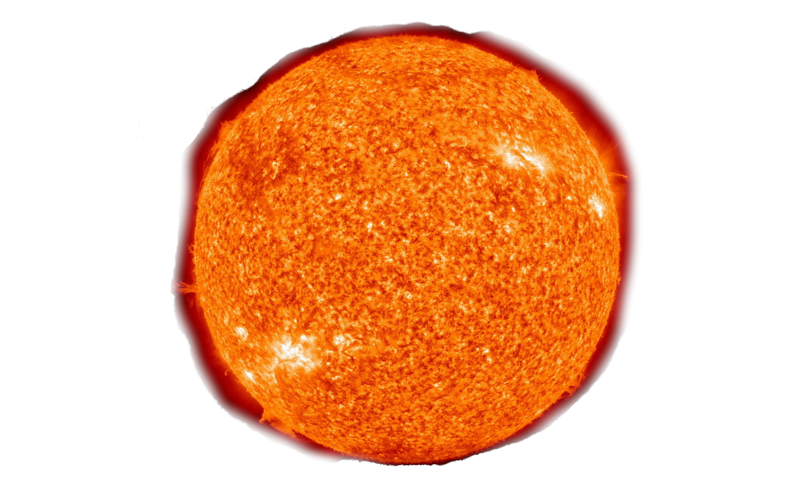
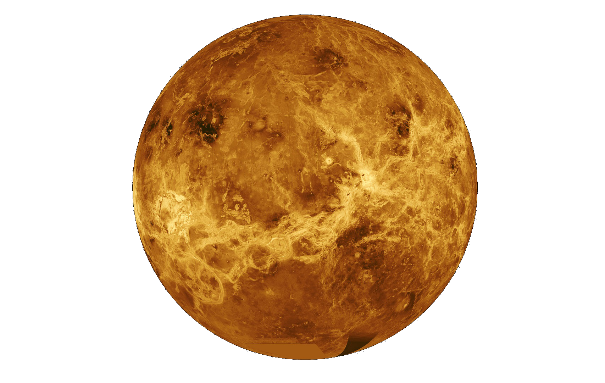
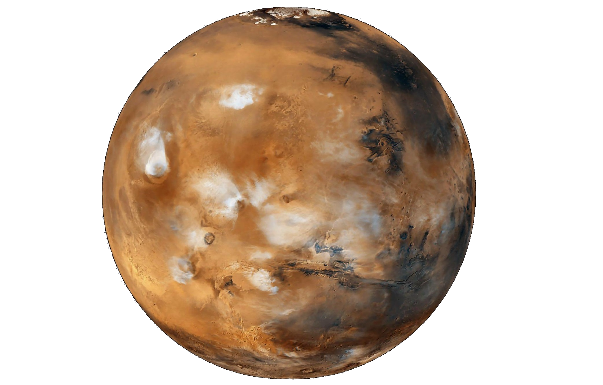
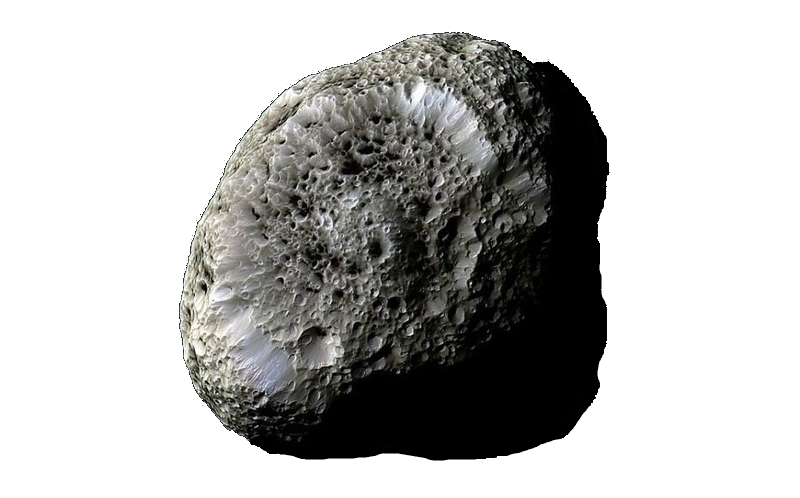
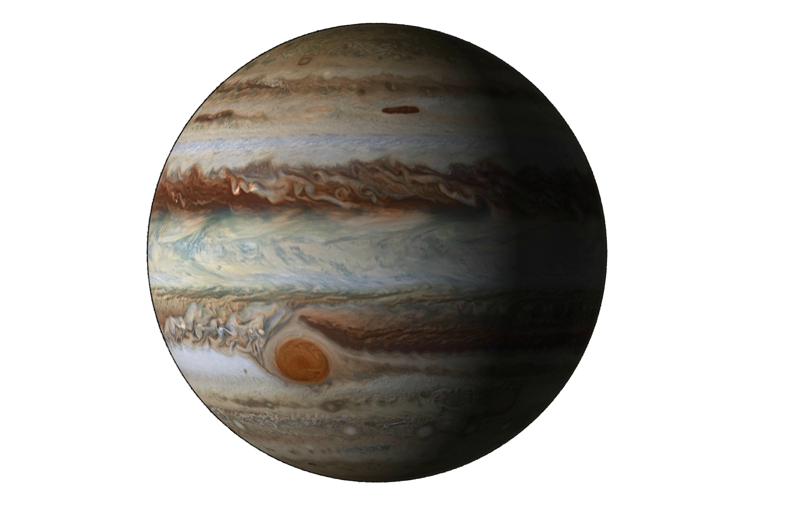
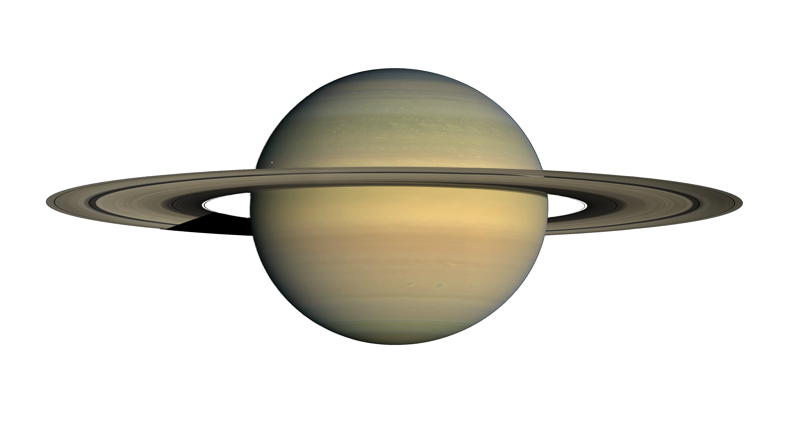
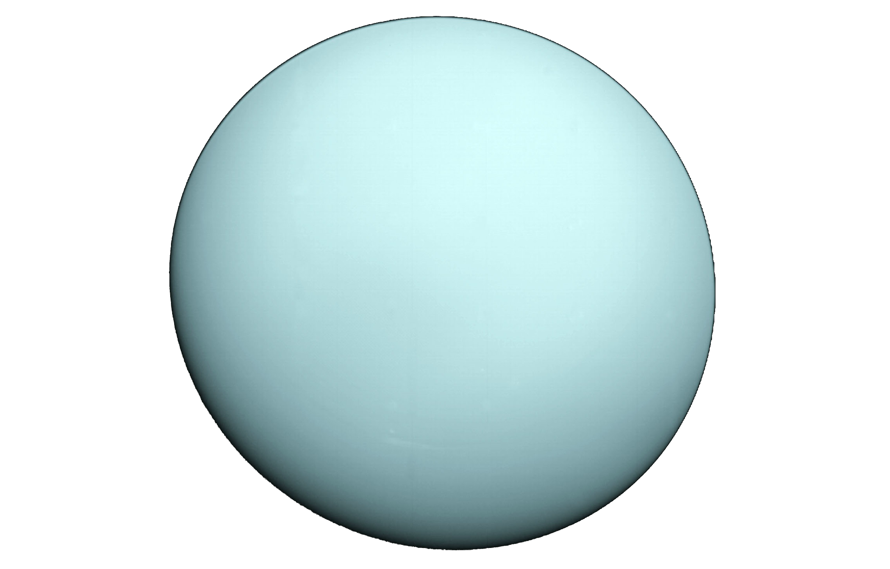
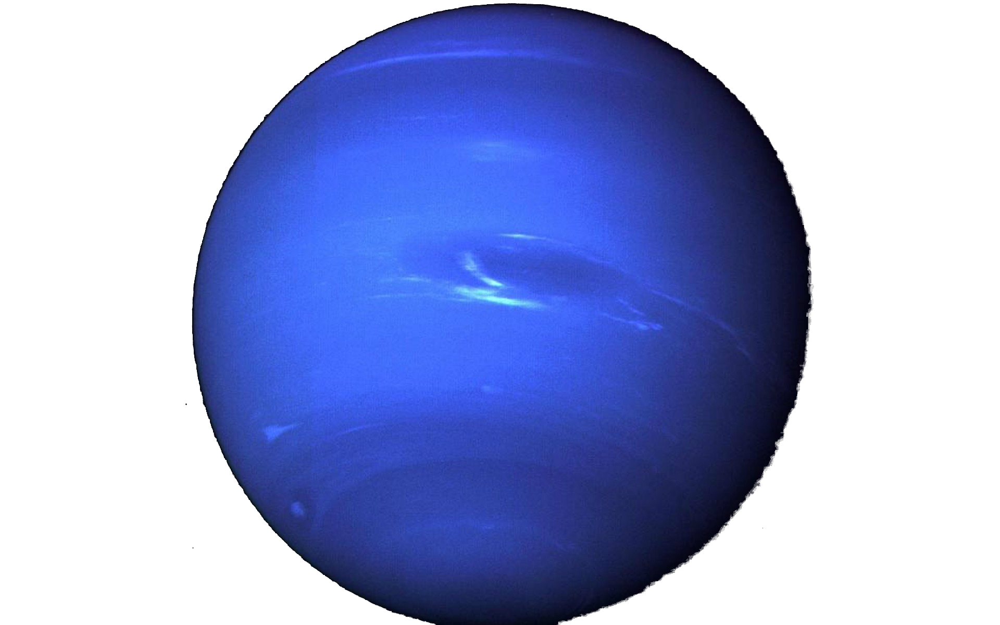

Sun
太陽
太陽
- 半徑：695,700km
- 距離銀河系中心：25,000光年
- 自轉週期：25天1時12分
- 公轉週期：2.5億年
- 視星等：-26.74
- 絕對星等：4.83

Mercury
水星
水星
- 半徑：2,440km
- 距離太陽：57,910,000km
- 自轉週期：58天15時30分
- 公轉週期：88天
- 衛星數：0

Venus
金星
金星
- 半徑：6,052km
- 距離太陽：108,200,000km
- 自轉週期：116天18時0分
- 公轉週期：225天
- 衛星數：0

Earth
地球
地球
- 半徑：6,371km
- 距離太陽：149,600,000km
- 自轉週期：1天
- 公轉週期：365天
- 衛星數：1

Mars
火星
火星
- 半徑：3,390km
- 距離太陽：227,900,000km
- 自轉週期：1天0時40分
- 公轉週期：687天
- 衛星數：2

Asteroid belt
小行星帶
小行星帶

Jupiter
木星
木星
- 半徑：69,911km
- 距離太陽：778,500,000km
- 自轉週期：9時56分
- 公轉週期：12年
- 衛星數：67

Saturn
土星
土星
- 半徑：58,232km
- 距離太陽：1,429,000,000km
- 自轉週期：10時42分
- 公轉週期：29年
- 衛星數：62

uranus
天王星
天王星
- 半徑：25,362km
- 距離太陽：2,871,000,000km
- 自轉週期：17時14分
- 公轉週期：84年
- 衛星數：27

Neptunus
海王星
海王星
- 半徑：24,622km
- 距離太陽：4,498,000,000km
- 自轉週期：16時6分
- 公轉週期：165年
- 衛星數：14

Pluto
冥王星
冥王星
- 半徑：1,187km
- 距離太陽：7,400,000,000km
- 自轉週期：6天9時2分
- 公轉週期：248年
- 衛星數：5